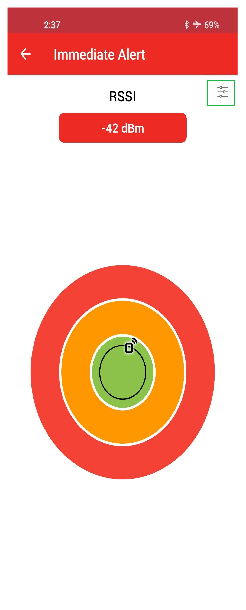
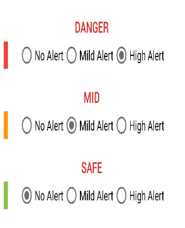

4.2.5.4.2 Immediate Alert Test case
The following session covers the test case scenarios that showcase the Immediate Alert service usage. The usage includes how to set the range for different zone and what all alert level can be set in each zone so that the preset alert indication will be displayed on Proximity Reporter (Curiosity board) based on the distance between proximity Monitor (Mobile) and reporter.
Separate test cases are derived to showcase the application behavior with and without encryption and power control. The encryption feature will establish a paired connection and the power control disabling option excludes the auto adjust TX power configuration (based on the range) by the BLE firmware.
The test case covers:
- How to use the mobile (Android) MBD application to establish the connection with PXPR curiosity board.
- Immediate Alert service Range Bar configuration.
- Alert level configurations on each zone.
- Testing scenarios to observe LED behavior in each alert level in different distance range.
Test 1: Without Encryption and Power Control
This test case is based on a non-secure connection without Encryption and Power Control features.
- In the MPLABX, open the
ble_pxpr_app(Reporter) application. Compile and program the PXPR application on the
curiosity board with the below configuration.
PIC32CX-BZ3_DFP
1.2.183
XC32 Compiler Version:
V4.40
After programming (or resetting) the device will be in APP_PXPR_STATE_ADV.
APP_PXPR_STATE_ADV - The application is waiting for a connection without bond. That too within timeout_adv_seconds(60 seconds). After the completion of the timeout the device enters APP_PXPR_STATE_IDLE state.
timeout_adv = 60 seconds - Timeout for advertisement without bond.
LED Behavior
APP_PXPR_STATE_ADV = Green LED flashes once in every 3 seconds.
APP_PXPR_STATE_IDLE = Green LED will turn off.
- Open the Microchip Bluetooth Data (MBD) in Android and click the “BLE Connect” sub-app.
- Press the “START SCAN” icon to see the nearby advertising devices. The device with
the advertising name “PXPR” is the target device.

- Click on the “PXPR” device to establish the connection. All the supported profiles in the proximity reporter will be displayed upon connection. At the peripheral side, the PXPR curiosity board will enter APP_PXPR_STATE_CONN when the connection is established.
- Press the “Immediate Alert Service” icon.

- Press the setting icon (Highlighted in green border) in the top right corner of the
screen to configure the link budget threshold set to a proper value. It is based on
the range bar value configuration in which the zone distance is calculated. The colored circles (Green, Orange, Red) shows the range for SAFE, MID, DANGER zone. The real time distance covered in each zone is user configurable. The configuration can be done in the Range Bar. The below screenshot shows the Range Bar configuration.


- The alert level at the Proximity Reporter (Curiosity board) based on the distance to
the central device (Mobile) is user-configurable on the immediate alert service
settings page.
In each zone what alert level is needed can be chosen by the user. The SAFE, MID, DANGER region are set as per the user configuration in the Range Bar.

-
The onboard Green LED shows the indication based on the alert level set at each zone. As per the above configuration, when the mobile is near the Proximity Reporter (PXPR), the alert level will be BLE_PXPR_ALERT_LEVEL_NO.
When the mobile phone moves away then the alert level will be BLE_PXPR_ALERT_LEVEL_MILD.
If the Proximity Reporter (PXPR) moves further away the alert level will be BLE_PXPR_ALERT_LEVEL_HIGH.
The LED behavior in each level will be as per the following table.
APP Alert Level
LED Behavior
BLE_PXPR_ALERT_LEVEL_NO
The green LED remains lit for 5 seconds and then indicates the current connection state
BLE_PXPR_ALERT_LEVEL_MILD
Green LED blinks once every second continuously for 5 seconds and then indicates the current connection state.
BLE_PXPR_ALERT_LEVEL_HIGH
Green LED blinks five times every second continuously for 5 seconds and then indicates the current connection state.
Note: The Green LED-based alert level indication at the Proximity Reporter (PXPR) will be observed only for 5 seconds. Further, the Green LED pattern will show the connection status. Similarly, for different zone entry and exit, the alert level indication based on below table will only be shown for 5 seconds and after that the connection state indication will be shows via Green LED.The Green LED patterns to indicate the Current application State according to the following table:
APP Connection State
LED Behavior
APP_PXPR_STATE_IDLE
All LEDs are turned off.
APP_PXPR_STATE_ADV
The green LED flashes once every 3 seconds. (On: 50 ms, Off: 2950 ms)
APP_PXPR_STATE_BOND_ADV
The Green LED flashes twice every 3 seconds. (On: 50 ms, Off: 50 ms)
APP_PXPR_STATE_CONN
The Green LED flashes twice every 1.5 seconds. (On: 50 ms, Off: 150 ms)
Test 2: With Encryption and Power Control
This test case demonstrates the feature tested with security connection with Encryption and Power Control features.
- In the MPLABX, open the
ble_pxpr_app(Reporter) application. Compile and program the PXPR application on the
curiosity board with the below configuration:
- Uncomment the compile option BLE_PXPR_LLS_AUTH_ENABLE in ble_lls.c
- Uncomment the compile option BLE_PXPR_IAS_AUTH_ENABLE in ble_ias.c
- Uncomment the compile option POWER_CTRL_ENABLE in initialization.c
PIC32CX-BZ3_DFP
1.2.183
XC32 Compiler Version:
V4.40
- After programming(or
resetting) the device will be in APP_PXPR_STATE_ADV.
APP_PXPR_STATE_ADV - The application is waiting for a connection without bond. That too within timeout_adv_seconds. After the completion of the timeout the device enters into APP_PXPR_STATE_IDLE.
timeout_adv = 60 seconds - Timeout for advertisement without bond.
LED Behavior
APP_PXPR_STATE_ADV = Green LED flashes once in every 3 seconds.
APP_PXPR_STATE_IDLE = Green LED will turn off.
- Open the Microchip Bluetooth Data (MBD) in Android and click the “BLE Connect” sub-app.
- Press the “START SCAN” icon to see the nearby advertising devices. The device with
the advertising name “PXPR” is the target device.

- Click on the “PXPR” device to establish the connection. All the supported profiles in the proximity reporter will be displayed upon connection. At the peripheral side, the PXPR curiosity board will enter APP_PXPR_STATE_CONN when the connection is established.
- On the mobile side, press the “Link Loss Service” icon and select the alert level as BLE_PXPR_ALERT_LEVEL_HIGH or BLE_PXPR_ALERT_LEVEL_MILD.
- There is a toast message popping up for paring permission. click the “Pair” button to trigger the pairing flow.
- On the mobile, press the “←” icon on the top left corner of the screen and press the “Immediate Alert Service” icon.
- Based on the configuration made on the settings page of “Immediate Alert Service”
the alert level will be indicated on the device.

When the mobile is near the Proximity Reporter(PXPR), the alert level will be BLE_PXPR_ALERT_LEVEL_NO. When the mobile phone moves away then the alert level will be BLE_PXPR_ALERT_LEVEL_MILD.
If the Proximity Reporter (PXPR) moves further away the alert level will be BLE_PXPR_ALERT_LEVEL_HIGH.
Note: The Green LED-based alert level indication at the Proximity Reporter(PXPR) will be observed only for 5 seconds. Further, the Green LED pattern will show the connection status. Similarly, for different zone entry and exits, the alert level indication based on below table will only be shown for 5 seconds and after that the connection state indication will be shows via Green LED.APP Alert Level
LED behavior
BLE_PXPR_ALERT_LEVEL_NO
The green LED remains lit for 5 seconds and then indicates the current connection state.
BLE_PXPR_ALERT_LEVEL_MILD
Green LED blinks once every second continuously for 5 seconds and then indicates the current connection state.
BLE_PXPR_ALERT_LEVEL_HIGH
Green LED blinks five times every second continuously for 5 seconds and then indicates the current connection state.
- Keep moving away from Proximity Reporter (PXPR) Until it is Disconnected. The PXPR will enter APP_PXPR_STATE_ADV_BOND. The link loss service alert level will be shown as what is set on “Link Loss Service”, which can be observed through the PXPR Green LED.